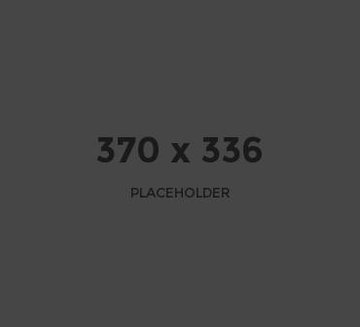

This is an example blog post. Not much here but that's not the point :) This is an example blog post. Not much here but that's not the point :) This is an example blog post. Not much here but that's not the point :) This is an example blog post. Not much here but that's not the point :) This is an example blog post. Not much here but that's not the point :) This is an example blog post. Not much here but that's not the point :) This is an example blog post. Not much here but that's not the point :) This is an example blog post. Not much here but that's not the point :) This is an example blog post. Not much here but that's not the point :) This is an example blog post. Not much here but that's not the point :) This is an example blog post. Not much here but that's not the point :) This is an example blog post. Not much here but that's not the point :) This is an example blog post. Not much here but that's not the point :) This is an example blog post. Not much here but that's...
